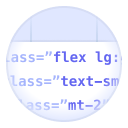
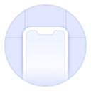
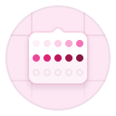

Installation
Get started with Tailwind CSS
Tailwind CSS works by scanning all of your HTML files, JavaScript components, and any other templates for class names, generating the corresponding styles and then writing them to a static CSS file.
It's fast, flexible, and reliable — with zero-runtime.
The simplest and fastest way to get up and running with Tailwind CSS from scratch is with the Tailwind CLI tool.
- Terminal
npm install -D tailwindcssnpx tailwindcss init Configure your template paths
Add the paths to all of your template files in your
tailwind.config.jsfile.tailwind.config.jsmodule.exports = { content: ["./src/**/*.{html,js}"], theme: { extend: {}, }, plugins: [],}Add the Tailwind directives to your CSS
Add the
@tailwinddirectives for each of Tailwind’s layers to your main CSS file.src/input.css@tailwind base; @tailwind components; @tailwind utilities;Start the Tailwind CLI build process
Run the CLI tool to scan your template files for classes and build your CSS.
Terminalnpx tailwindcss -i ./src/input.css -o ./dist/output.css --watchStart using Tailwind in your HTML
Add your compiled CSS file to the
<head>and start using Tailwind’s utility classes to style your content.src/index.html<!doctype html><html><head> <meta charset="UTF-8"> <meta name="viewport" content="width=device-width, initial-scale=1.0"> <link href="/dist/output.css" rel="stylesheet"></head><body> <h1 class="text-3xl font-bold underline"> Hello world! </h1></body></html>
What to read next
Get familiar with some of the core concepts that make Tailwind CSS different from writing traditional CSS.
- 
Utility-First Fundamentals
Using a utility-first workflow to build complex components from a constrained set of primitive utilities.
- 
Responsive Design
Build fully responsive user interfaces that adapt to any screen size using responsive modifiers.
Hover, Focus & Other States
Style elements in interactive states like hover, focus, and more using conditional modifiers.
Dark Mode
Optimize your site for dark mode directly in your HTML using the dark mode modifier.
Reusing Styles
Manage duplication and keep your projects maintainable by creating reusable abstractions.
- 
Customizing the Framework
Customize the framework to match your brand and extend it with your own custom styles.